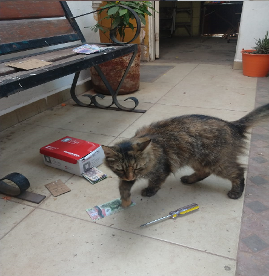

Este 08/07/2024 la ladrona profesional conosida como la fugitiva se moviliso de nuevo robando una caja automatica serca de Palacio Nacional la fugitiva sige suelta en las calles si la ve reportela imediatamente
a continuacion la evidencia:

Informacion hacerca de "la fugitiva": no tenemos el nombre pero sabemos que tiene 3 años humanos vino de una familia desconocida pero se sabe que se fue con todos los ahorros de esta familia y se gana la vida cometiendo este tipo de crimenes en el segundo robo trato de robar una pintura pero fue detenida en el proseso y por un robo menor a una tienda se le condeno a 3 años de prision pero se escapo 6 meses despues de su encierro hay rumores de que tiene secuases que bloquean las camaras de seguridad hackeandolas es muy sigilosa y aun asi la vieron 4 veces el mismo dia y una camara le tomo una foto despues de eso desaparecio sin dejar rastro se dice que roba para comprar arte pero no esta confirmado otros dicen que les da la comida a los pobres pero tampoco esta confirnado tambien intento robar la bandera nacional pero fallo y fue condenada a cadena perpetua pasaron 13 años gatunos interrogandola hacerca de por que robaba pero nunca hablo y despues de quince años gatunos escapo y dos dias despues robo el cajero automatico de ahora apesar que es la mas sigilosa del pais aun asi la vieron 4 veces y eso que el robo fue cometido a altas horas de la mañana la imagen solo tiene mucho brillo
este 20 de julio se confirmo que la fugitiva da el dinero a los pobres por eso la gente la llama la ladrona gentil aunque este acto pueda confundirse con heroismo esta mal sigue siendo un robo y sigue siendo un pecado. Cuando estaba repartiendo la comida alguien le pregunto "¿Puedo robar para el bien?" y esta le respondio "esta bien soñar, pero tambien tienes que aceptar la realidad mi vida ya quedo manchada de por vida por mis errores ¡No cometas los mismos errores que yo! Tu todavia tienes oportunidad, no manches tu vida" para luego desaparecer este suceso fue captado por una camara no tenemos el video pero lo confirmo el ministro de la policia. Se empezo una busqueda para atrapala es una mision arriesgada un noticiero dijo "es muy arriesgado hay que esperar." y el ministro dijo "Por eso no avanzamos no hay que esperar una oportunidad hay que ir y buscarla si queremos ganar esta guerra contra el crimen hay que tomar la inisiativa."